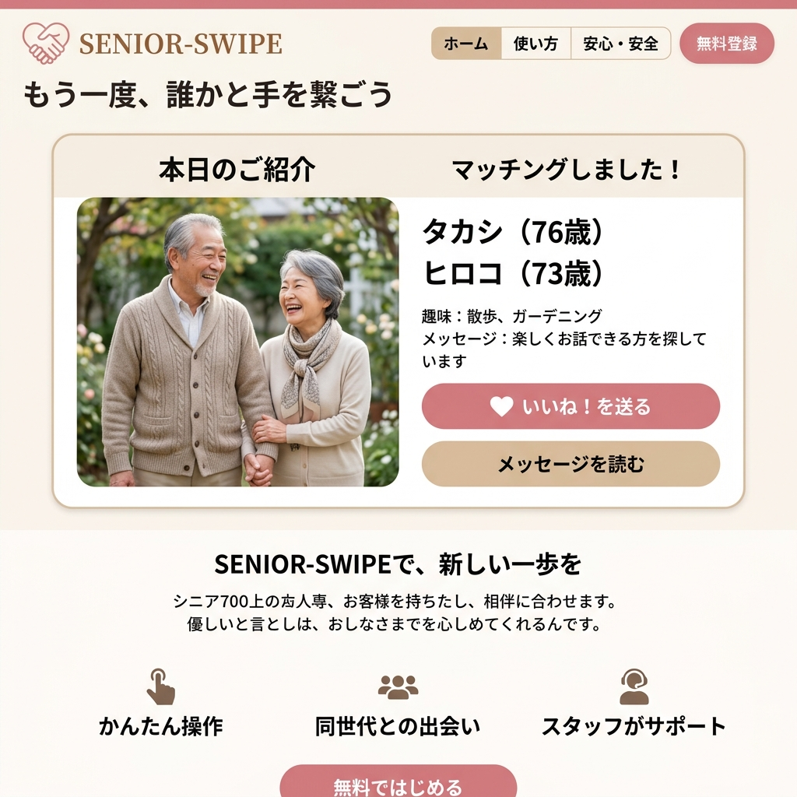

もう一度、
誰かと手を繋ごう。
70歳からの、新しい人生のパートナー探し。配偶者との死別や長年の孤独を経て、「最後の日々を誰かと笑って過ごしたい」と願うシニアに特化した、温かく安全なマッチングプラットフォーム。

孤独という、最も静かな社会課題
子供たちは独立し、伴侶を見送り、一人で食べる夕食。日本には今、深刻な孤独を抱えるシニア層が何百万人も存在しています。「恋人」というより、「一緒にお茶を飲み、他愛のない話ができる相手」が欲しい。SENIOR-SWIPEはその切実な願いに応えます。
徹底的に「高齢者目線」で作られたUIと安全網
超シンプル・大きな文字のアプリ設計
スワイプや複雑なタップは不要。一日一枚、あなたに合いそうなお相手の大きな写真とプロフィールがゆっくり表示されます。
身元保証と「対面」による入会審査
オンライン完結ではありません。初回は必ず運営スタッフ（同世代のシニアコンシェルジュ）とオンライン面談を行い、身元と人柄を確認します。
家族共有モード
「怪しい詐欺に引っかからないか」というご家族の不安を払拭。マッチングの状況を娘・息子さんにも共有できる安心設定。
共通の「喪失」から始まる、深い理解
多くの会員が、愛する人との別れを経験しています。だからこそ、相手の傷に寄り添い、過度な期待を押し付けない、成熟した穏やかな関係が築けます。プロフィールには「配偶者との死別」や「現在の健康状態」などを正直に記載できる項目を設けています。
「デート」ではなく「お見合い茶会」
二人きりで会うのが不安な方のために、運営が主催する少人数の「お茶会」や「寺社仏閣巡り」を毎週開催。スタッフが自然な会話をサポートし、趣味を通じてゆっくりと関係を温めることができます。
Case Study | 76歳 タカシさんと73歳 ヒロコさん
奥様を亡くして5年間、ほとんど外出していなかったタカシさん。娘さんの勧めで登録し、同じ趣味（盆栽）を持つヒロコさんと出会いました。今では毎週末、二人で植物園を歩き、ベンチで数時間語り合うのが最高の楽しみだと笑います。
誰もが最後まで、愛される権利を
「この歳で恥ずかしい」。その言葉で、残り20年もの時間を一人で過ごす必要はありません。SENIOR-SWIPEは、シニア層の恋愛やパートナーシップを社会的に肯定し、明るい老後の新しいスタンダードを作ります。